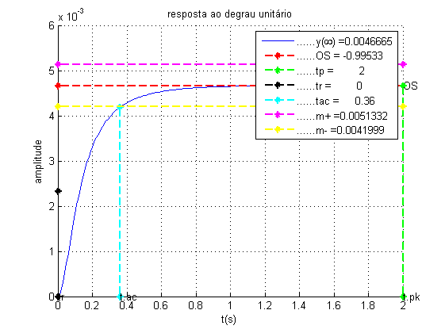
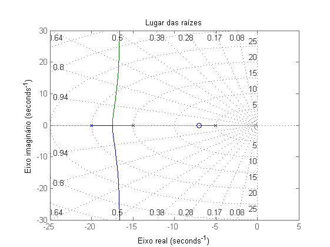
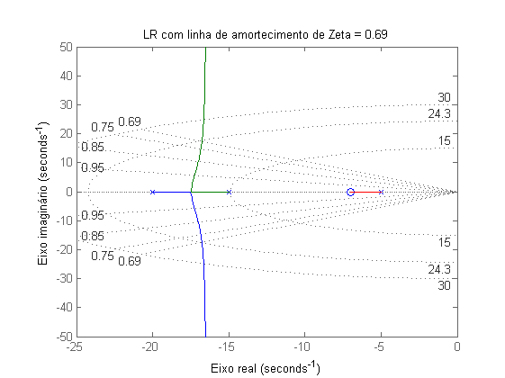
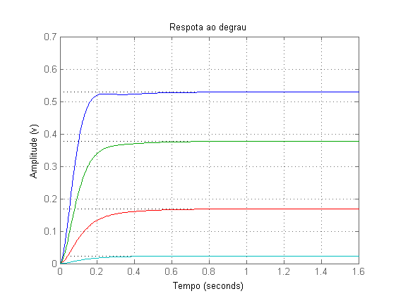

sobre
- Autor: Jonas Vieira de Souza
- Data: 02/10/2018
- Objetivo: avaliar sistemas
Contents
configurações iniciais
limpar figuras, variáveis e console
close all;
clear;
clc;
resposta ao degrau, desempenho e LR
- resposta ao degrau
- desempenho
- LR
s = tf('s'); G = ( (s+7) ) / ( (s+5)*(s+15)*(s+20) ) figure(1); [ ~, ~, ~, ~, leg ] = step_detail( ( s + 7 ),( (s+5)*(s+15)*(s+20) ), 0, 0.01, 2, 0.1, 1, 1, '' ); figure(2); G_polos = pole(G) G_zeros = zero(G) rlocus(G); title('Lugar das raízes'); xlabel('Eixo real'); ylabel('Eixo imaginário'); grid on;
G =
s + 7
---------------------------
s^3 + 40 s^2 + 475 s + 1500
Continuous-time transfer function.
G_polos =
-20.0000
-15.0000
-5.0000
G_zeros =
-7
 
identificar a área do LR com critério
- OS = 5%
- ts = 1s
- k = ?
Mp = 0.05; Zeta = (1) / ( sqrt( 1 + ( (pi^2) / (log(Mp)^2) ) ) ) figure(3); c0 = rlocusplot(G); sgrid([Zeta, 0.75, 0.85, 0.95],[15, 24.325, 30]); c0.AxesGrid.Title = 'LR com linha de amortecimento de Zeta = 0.69'; axis([-25 0 -50 50]); xlabel('Eixo real'); ylabel('Eixo imaginário'); grid on; p_i = pi / ( (2/3)*0.26 ) p_r = (-Zeta*p_i) / sqrt(1-Zeta^2)
Zeta =
0.6901
p_i =
18.1246
p_r =
-17.2831

ganho diferentes sobre a área com critério
- obter K's e polo's
- plotar respostas ao degrau
%{ através de [K, Polos] = rlocfind(G) dado os pontos selecionados com rlocfind(G): -16.82 +14.79i, -16.98 +10.56i, -17.24 +5.60i, -18.84 -0.09i obtido os respectivos K: 240.63 129.91 43.50 5.21 e os respecitvos Polos: -16.82 +14.79i, -16.82 -14.79i, -6.34 + 0.00i -16.99 +10.57i, -16.99 -10.57i, -6.01 + 0.00i -17.26 + 5.60i, -17.26 - 5.60i, -5.47 + 0.00i -18.83, -16.09, -5.06 %} figure(4) ks = [240.6392, 129.9134, 43.5051, 5.2197] for i = 1:4 sys_cl = feedback(G*ks(i),1); step(sys_cl) hold on end title('Respota ao degrau'); xlabel('Tempo'); ylabel('Amplitude (v)'); grid on;
ks = 240.6392 129.9134 43.5051 5.2197